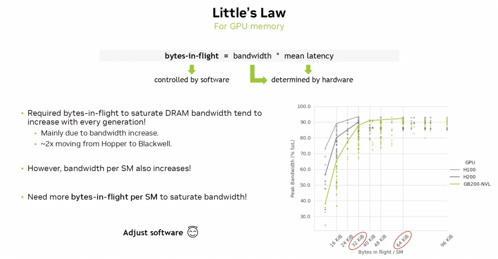
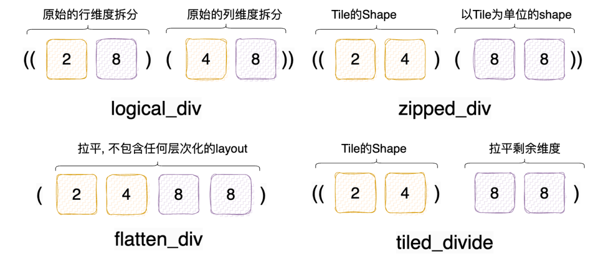
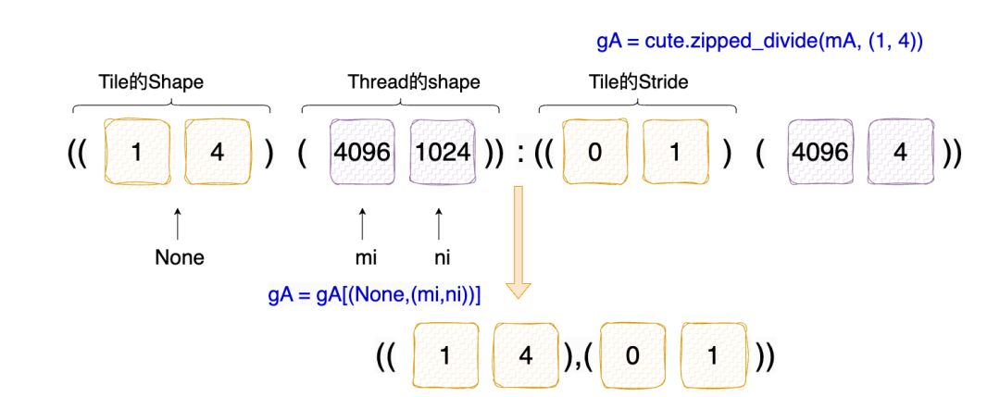
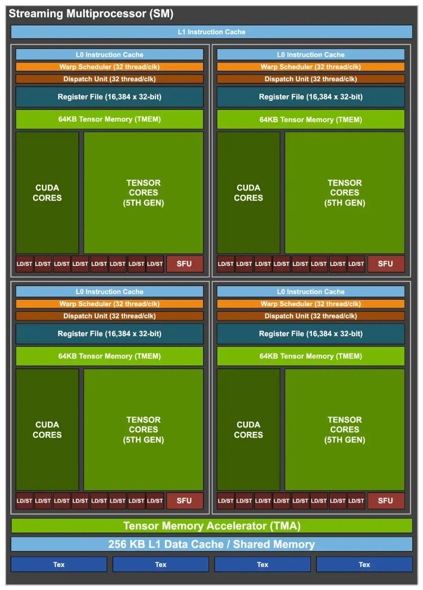
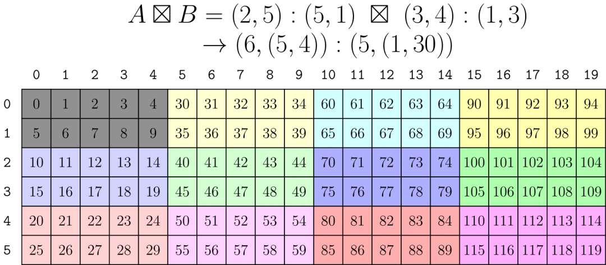

Tensor-101: Element-Wise Add¶
- 원문 제목: Tensor-101: Element-Wise Add
- 저자: Tilebot
- 계정: zartbot
- 발행일: 2025년 10월 6일 00:42
TL:DR¶
이제 CuteDSL과 Tilelang을 섞어서 같이 다뤄 보자. 먼저 가장 basic한 operator부터 시작한다. 대략 각 글의 구조는 먼저 알고리즘 자체를 이야기하고, 그다음 CuteDSL과 Tilelang 구현, 그리고 performance tuning 관련 내용을 다루는 식이다. 대략 elementwise Add부터 GEMV, GEMM으로 가고, 점차 FlashAttn, GroupGEMM 같은 것들로 넘어간다.
이 글은 elementwise add 계산을 소개하고, cuteDSL과 tilelang으로 몇 가지 kernel을 구현한 뒤 baseline cublas와 비교한다. performance result는 다음과 같다.
| 알고리즘 구현 | Thor GFLOPS | Thor MemBW | H20 GFLOPS | H20 MemBW |
|---|---|---|---|---|
| Cublas | 19.61 | 235.383 GB/s | 262.25 | 3147.11 GB/s |
| cutedsl-naive | 20.07 | 240.90 GB/s | 179.52 | 2154.25 GB/s |
| cutedsl-vec-ld/st | 21.48 | 257.77 GB/s | 293.23 | 3518.77 GB/s |
| cutedsl-tv-layout | 20.92 | 251.12 GB/s | 279.28 | 3351.40 GB/s |
| tilelang-naive | 16.81 | 201.80 GB/s | 268.17 | 3218.14 GB/s |
| tilelang-autotune | 20.79 | 249.49 GB/s | 271.65 | 3259.82 GB/s |
Note: Thor는 최고 전력 모드로 조정해서 run하지 않았기 때문에 앞의 test가 정확하지 않다. nvidia-smi -pm 1을 설정한 뒤에도 performance jitter가 꽤 뚜렷했다. 재측정에서는 Thor에 대해 더 긴 warmup 횟수를 사용했고, 위 표는 이미 update했다.
cuteDSL에서는 TV-Layout 관련 지식도 소개한다. cuteDSL과 비교하면 tilelang은 더 간편하고, autotune 기능도 매우 유용하다.
1. ElementWise Add¶
1.1 Algorithm overview¶
matrix의 ElementWise Addition 계산은 다음과 같다.
Input: input은 두 matrix이며, 이를 \(A\)와 \(B\)라고 부른다. constraint는 \(A,B\)가 반드시 같은 shape이어야 한다는 것이다.
Computation method: \(C=A+B\)를 compute한다. 그리고 \(A,B,C\)는 모두 \(M \times N\) matrix이며, 임의의 \(0 \leq i \lt M\) 및 \(0 \leq j \lt N\)에 대해 다음과 같다.
물론 또 다른 computation도 있다. scalar \(\alpha\), \(\beta\)가 있을 때, \(C=\alpha A+\beta B\)는 다음과 같다.
CPU로 compute하는 code는 다음과 같다.
void cpu_geam(int m, int n, float alpha, const float* A, float beta, const float* B, float* C) {
for (int j = 0; j < n; ++j) {
for (int i = 0; i < m; ++i) {
int index = j * m + i;
C[index] = alpha * A[index] + beta * B[index];
}
}
}
1.2 CuBLAS baseline¶
계산 자체는 매우 simple하며, Memory-Bound operation에 속한다. CUBLAS는 cublas<t>geam (GEneral matrix-matrix Addition/Multiplication) function을 제공하므로, 이 기능을 매우 간편하게 구현할 수 있다.
#include <iostream>
#include <vector>
#include <cstdlib>
#include <cuda_runtime.h>
#include <cublas_v2.h>
// CUDA 및 CUBLAS API call의 error checking macro
#define CHECK_CUDA(call) do { \
cudaError_t err = call; \
if (err != cudaSuccess) { \
fprintf(stderr, "CUDA Error at %s:%d: %s\n", __FILE__, __LINE__, cudaGetErrorString(err)); \
exit(EXIT_FAILURE); \
} \
} while (0)
#define CHECK_CUBLAS(call) do { \
cublasStatus_t status = call; \
if (status != CUBLAS_STATUS_SUCCESS) { \
fprintf(stderr, "CUBLAS Error at %s:%d\n", __FILE__, __LINE__); \
exit(EXIT_FAILURE); \
} \
} while (0)
int main() {
// 1. matrix dimension 정의
int M = 4096; // matrix row 수
int N = 4096; // matrix column 수
long long num_elements = (long long)M * N;
std::cout << "Testing cublasSgeam (element-wise add) with matrix size " << M << "x" << N << std::endl;
// GEAM operation의 scalar alpha와 beta 정의
// C = alpha * A + beta * B. simple addition에서는 alpha=1.0, beta=1.0
float alpha = 1.0f;
float beta = 1.0f;
// 2. host side에서 data allocation 및 initialization
std::vector<float> h_A(num_elements);
std::vector<float> h_B(num_elements);
std::vector<float> h_C_gpu(num_elements); // GPU computation result
std::vector<float> h_C_cpu(num_elements); // verification용 CPU computation result
// random number로 matrix 채우기
for (long long i = 0; i < num_elements; i++ ) {
h_A[i] = static_cast<float>(rand()) / RAND_MAX;
h_B[i] = static_cast<float>(rand()) / RAND_MAX;
}
// 3. device side에서 memory allocation
float *d_A, *d_B, *d_C;
CHECK_CUDA(cudaMalloc((void**)&d_A, num_elements * sizeof(float)));
CHECK_CUDA(cudaMalloc((void**)&d_B, num_elements * sizeof(float)));
CHECK_CUDA(cudaMalloc((void**)&d_C, num_elements * sizeof(float)));
// 4. CUBLAS handle 생성
cublasHandle_t handle;
CHECK_CUBLAS(cublasCreate(&handle));
// 5. host에서 device로 data copy
CHECK_CUDA(cudaMemcpy(d_A, h_A.data(), num_elements * sizeof(float), cudaMemcpyHostToDevice));
CHECK_CUDA(cudaMemcpy(d_B, h_B.data(), num_elements * sizeof(float), cudaMemcpyHostToDevice));
// 6. performance test
cudaEvent_t start, stop;
CHECK_CUDA(cudaEventCreate(&start));
CHECK_CUDA(cudaEventCreate(&stop));
// Warm-up
CHECK_CUBLAS(cublasSgeam(handle,
CUBLAS_OP_N, CUBLAS_OP_N, // A와 B를 transpose하지 않음
M, N,
&alpha,
d_A, M, // A와 그 leading dimension
&beta,
d_B, M, // B와 그 leading dimension
d_C, M)); // C와 그 leading dimension
CHECK_CUDA(cudaDeviceSynchronize());
// 정식 timing
int iterations = 100;
float total_time = 0.0f;
CHECK_CUDA(cudaEventRecord(start));
for (int i = 0; i < iterations; ++i) {
CHECK_CUBLAS(cublasSgeam(handle, CUBLAS_OP_N, CUBLAS_OP_N, M, N, &alpha, d_A, M, &beta, d_B, M, d_C, M));
}
CHECK_CUDA(cudaEventRecord(stop));
CHECK_CUDA(cudaEventSynchronize(stop)); // 모든 GPU operation 완료 대기
CHECK_CUDA(cudaEventElapsedTime(&total_time, start, stop));
// 7. performance result 계산 및 출력
float avg_time_ms = total_time / iterations;
float avg_time_s = avg_time_ms / 1000.0f;
// GFLOPS 계산
// 각 element에는 floating-point addition 1회가 있음
double flops = (double)num_elements;
double gflops = (flops / 1e9) / avg_time_s;
// effective memory bandwidth 계산
// 각 operation에는 A read (M*N floats), B read (M*N floats), C write (M*N floats)가 필요함
// 총 3 * M * N * sizeof(float) bytes 전송
double bytes_transferred = 3.0 * num_elements * sizeof(float);
double bandwidth_gb_s = (bytes_transferred / 1e9) / avg_time_s;
std::cout << "--------------------------------------------------------" << std::endl;
std::cout << "Average execution time: " << avg_time_ms << " ms" << std::endl;
std::cout << "Performance (GFLOPS): " << gflops << " GFLOPS" << std::endl;
std::cout << "Effective Memory Bandwidth: " << bandwidth_gb_s << " GB/s" << std::endl;
std::cout << "--------------------------------------------------------" << std::endl;
// GPU computation result를 host로 다시 copy
CHECK_CUDA(cudaMemcpy(h_C_gpu.data(), d_C, num_elements * sizeof(float), cudaMemcpyDeviceToHost));
// 9. resource 정리
CHECK_CUDA(cudaFree(d_A));
CHECK_CUDA(cudaFree(d_B));
CHECK_CUDA(cudaFree(d_C));
CHECK_CUDA(cudaEventDestroy(start));
CHECK_CUDA(cudaEventDestroy(stop));
CHECK_CUBLAS(cublasDestroy(handle));
return 0;
}
Jetson Thor에서의 test result는 다음과 같다.
zartbot@zartbot-thor:~$ nvcc -arch=sm_110 -lcublas eleadd.cu
zartbot@zartbot-thor:~$ ./a.out
Testing cublasSgeam (element-wise add) with matrix size 4096x4096
--------------------------------------------------------
Average execution time: 0.855316 ms
Performance (GFLOPS): 19.6152 GFLOPS
Effective Memory Bandwidth: 235.383 GB/s
--------------------------------------------------------
그리고 H20에서의 test result는 다음과 같다.
Testing cublasSgeam (element-wise add) with matrix size 4096x4096
--------------------------------------------------------
Average execution time: 0.0639718 ms
Performance (GFLOPS): 262.259 GFLOPS
Effective Memory Bandwidth: 3147.11 GB/s
--------------------------------------------------------
2. Cute-DSL¶
Cute-DSL에는 git에 notebook[1]이 있다.
2.1 Navie elementwise add¶
먼저 관련 library를 import한다.
import os
os.environ['CUTE_DSL_ARCH'] = 'sm_101a'
# Thor는 CUDA 13.0에서 SM110으로 이름이 바뀌었지만 cutedsl-4.2는 아직 12.9 기반이므로 environment variable을 설정해야 한다.
import torch
from functools import partial
import cutlass
import cutlass.cute as cute
from cutlass.cute.runtime import from_dlpack
Cute-DSL Kernel은 다음과 같다. 전체적으로 보면 Cuda code를 작성하는 것과 큰 차이가 없다.
@cute.kernel
def naive_elementwise_add_kernel(
gA: cute.Tensor,
gB: cute.Tensor,
gC: cute.Tensor,
):
tidx, _, _ = cute.arch.thread_idx()
bidx, _, _ = cute.arch.block_idx()
bdim, _, _ = cute.arch.block_dim()
thread_idx = bidx * bdim + tidx
# Map thread index to logical index of input tensor
m, n = gA.shape
ni = thread_idx % n
mi = thread_idx // n
# Map logical index to physical address via tensor layout
a_val = gA[mi, ni]
b_val = gB[mi, ni]
# Perform element-wise addition
gC[mi, ni] = a_val + b_val
@cute.jit
def naive_elementwise_add(
mA: cute.Tensor,
mB: cute.Tensor,
mC: cute.Tensor
):
num_threads_per_block = 256
m, n = mA.shape
kernel = naive_elementwise_add_kernel(mA, mB, mC)
kernel.launch(grid=((m * n) // num_threads_per_block, 1, 1),
block=(num_threads_per_block, 1, 1))
그다음은 몇 가지 test와 verification이다.
M, N = 4096, 4096
a = torch.randn(M, N, device="cuda", dtype=torch.float32)
b = torch.randn(M, N, device="cuda", dtype=torch.float32)
c = torch.zeros(M, N, device="cuda", dtype=torch.float32)
a_ = from_dlpack(a, assumed_align=16)
b_ = from_dlpack(b, assumed_align=16)
c_ = from_dlpack(c, assumed_align=16)
# Compile kernel
naive_elementwise_add_ = cute.compile(naive_elementwise_add, a_, b_, c_)
naive_elementwise_add_(a_, b_, c_)
# verify correctness
torch.testing.assert_close(c, a + b)
아래에는 benchmark code도 있다.
def benchmark(callable, *, num_warmups, num_iterations):
start_event = torch.cuda.Event(enable_timing=True)
end_event = torch.cuda.Event(enable_timing=True)
torch.cuda.synchronize()
for _ in range(num_warmups):
callable()
start_event.record(stream=torch.cuda.current_stream())
for _ in range(num_iterations):
callable()
end_event.record(stream=torch.cuda.current_stream())
torch.cuda.synchronize()
elapsed_time = start_event.elapsed_time(end_event)
avg_time = elapsed_time / num_iterations
gflops = a.numel() / (avg_time / 1000) / 1e9
print(f"Average execution time: {avg_time:.4f} ms")
print(f"Performance (GFLOPS): {gflops:.4f} GFLOPS")
print(f"Effective Memory Bandwidth: {(3 * a.numel() * 4) / (avg_time / 1000) / 1e9:.2f} GB/s")
benchmark(partial(naive_elementwise_add_, a_, b_, c_), num_warmups=5, num_iterations=100)
Thor에서 execute
Average execution time: 0.8357 ms
Performance (GFLOPS): 20.0751 GFLOPS
Effective Memory Bandwidth: 240.90 GB/s
H20에서 execute
Average execution time: 0.0935 ms
Performance (GFLOPS): 179.5212 GFLOPS
Effective Memory Bandwidth: 2154.25 GB/s
Cublas result와 비교하면 memory bandwidth를 꽉 채우지 못했다는 것을 볼 수 있다.
2.2 Vectorized LD/ST¶
Cute-DSL의 Note는 다시 Little's Law를 이야기한다.
여기서:
- \(L\)은 system에 평균적으로 도착해 있는 service object의 수이다.
- \(\lambda\)는 service object의 평균 도착률(Bandwidth)이다.
- \(W\)는 service object가 system 안에서 평균적으로 소요하는 시간(Latency)이다.
Memory-Bound operator의 경우, \(L\)은 평균 inflight LD/ST operation 수를 나타내고, \(\lambda\)는 bandwidth, 즉 Memory와 Compute Unit 사이의 data transfer rate를 나타낸다. \(W\)는 latency, 즉 memory request의 RTT를 나타낸다.

앞의 2.1에서 보면 Memory BW가 limit까지 도달하지 못했다. 그러면 simple한 방법은 software로 LD/ST operation 수를 늘리는 것이다. 비교적 최신 GPU architecture에는 128bits vectorized LD/ST instruction(ld.global.v4.f32, st.global.v4.f32)이 추가되었고, 이를 이용하면 inflight 수를 늘릴 수 있다.
하지만 이때 각 thread는 vectorized LD/ST를 통해 memory address가 연속된 element 4개를 읽어야 한다. 즉 (1,4):(0:1) layout을 구성한다. 다시 말해 \(M \times N\) matrix를 (1,4) 기준으로 block으로 나누어야 한다. 여기서 matrix Layout의 division을 조금 더 펼쳐 설명한다.
「CuTe Layout algebra-1: Overview」에서도 일부 소개했듯이, matrix Partitioning/Tiling에 대한 algebra operation을 Logical_divide라고 부른다. 예를 들어 M=16, N=32인 tensor가 있고, 이를 tileM=2, tileN=4인 block으로 나누고 싶다고 하자. 그러면 row M은 8개 block으로 나뉘고, column 32는 32/4=8개 block으로 나뉜다. Cutlass에는 logical_divide, zipped_divide, flat_divide, tiled_divide 등 여러 division이 정의되어 있다. 사실 너무 걱정할 필요는 없다. 뒤의 세 가지는 모두 logical_divide를 기반으로 생성된 nested tuple 안의 mode를 재배열해서 나온 것이다. 아래에 test example이 있다.
@cute.jit
def layout_test(
mA: cute.Tensor
):
tiler = (2,4)
lA = cute.logical_divide(mA, tiler=tiler)
zA = cute.zipped_divide(mA, tiler=tiler)
fA = cute.flat_divide(mA, tiler=tiler)
tA = cute.tiled_divide(mA, tiler=tiler)
print(f"[DSL INFO] Tiled Tensors:")
print(f"[DSL INFO] Tiler: {tiler}")
print(f"[DSL INFO] logical_divide lA = {lA}")
print(100*'=')
print(f"[DSL INFO] zipped_divide zA = {zA}")
print(f"[DSL INFO] flatten_divide fA = {fA}")
print(f"[DSL INFO] tiled_divide tA = {tA}")
M,N= 16,32
a = torch.randn(M, N, device="cuda", dtype=torch.float32)
print(f"Tensor shape {a.shape} Stride: {a.stride()}")
a_ = from_dlpack(a, assumed_align=16)
layout_test(a_)
구체적인 output은 다음과 같다.
Tensor shape torch.Size([16, 32]) Stride: (32, 1)
[DSL INFO] Tiled Tensors:
[DSL INFO] Tiler: (2, 4)
[DSL INFO] logical_divide lA = tensor<ptr<f32, gmem, align<16>> o ((2,8),(4,8)):((32,64),(1,4))>
====================================================================================================
[DSL INFO] zipped_divide zA = tensor<ptr<f32, gmem, align<16>> o ((2,4),(8,8)):((32,1),(64,4))>
[DSL INFO] flatten_divide fA = tensor<ptr<f32, gmem, align<16>> o (2,4,8,8):(32,1,64,4)>
[DSL INFO] tiled_divide tA = tensor<ptr<f32, gmem, align<16>> o ((2,4),8,8):((32,1),64,4)>
logical_divide의 경우, 기존 row와 column 위에 nested tuple을 직접 구성한 뒤 해당 stride를 계산한다. zipped는 이를 재배열해서 tile shape tuple을 앞에 두고, 뒤쪽 segment가 Tile 단위의 shape을 나타내게 한다. flatten은 전체 nested tuple을 곧바로 1D로 flatten한다. tiled_divide는 tile shape tuple만 nested로 구성한다.

vectorized LD/ST가 필요한 경우 tiler는 (1,4)이다. M,N=(4096,4096)인 matrix에 대해 zipped_div result는 다음과 같다.

따라서 우리가 구성하는 code는 다음과 같다. 이때 주의할 점은 각 thread가 vectorized하게 read해야 하는 slice에 대해 mi,ni index를 사용해야 한다는 것이다.
@cute.kernel
def vectorized_elementwise_add_kernel(
gA: cute.Tensor,
gB: cute.Tensor,
gC: cute.Tensor,
):
tidx, _, _ = cute.arch.thread_idx()
bidx, _, _ = cute.arch.block_idx()
bdim, _, _ = cute.arch.block_dim()
thread_idx = bidx * bdim + tidx
# Map thread index to logical index of input tensor
m, n = gA.shape[1] # thread-domain
print(f"THread domain m={m} , n={n}") # result is the purple (4096,1024) in the figure above
ni = thread_idx % n
mi = thread_idx // n
# build vectorized load using .load()
a_val = gA[(None, (mi, ni))].load()
b_val = gB[(None, (mi, ni))].load()
print(f"[DSL INFO] sliced gA = {gA[(None, (mi, ni))]}")
print(f"[DSL INFO] sliced gB = {gB[(None, (mi, ni))]}")
# Perform element-wise addition
gC[(None, (mi, ni))] = a_val + b_val
@cute.jit
def vectorized_elementwise_add(
mA: cute.Tensor,
mB: cute.Tensor,
mC: cute.Tensor
):
threads_per_block = 256
# apply zipped div to the original matrix by (1,4)
gA = cute.zipped_divide(mA, (1, 4))
gB = cute.zipped_divide(mB, (1, 4))
gC = cute.zipped_divide(mC, (1, 4))
print(f"[DSL INFO] Tiled Tensors:")
print(f"[DSL INFO] gA = {gA}")
print(f"[DSL INFO] gB = {gB}")
print(f"[DSL INFO] gC = {gC}")
vectorized_elementwise_add_kernel(gA, gB, gC).launch(
grid=(cute.size(gC, mode=[1]) // threads_per_block, 1, 1),
block=(threads_per_block, 1, 1),
)
그다음 algorithm verification과 performance test를 execute한다.
M,N= 4096,4096
a = torch.randn(M, N, device="cuda", dtype=torch.float32)
b = torch.randn(M, N, device="cuda", dtype=torch.float32)
c = torch.zeros(M, N, device="cuda", dtype=torch.float32)
a_ = from_dlpack(a, assumed_align=16)
b_ = from_dlpack(b, assumed_align=16)
c_ = from_dlpack(c, assumed_align=16)
compiled_func = cute.compile(vectorized_elementwise_add, a_, b_, c_)
compiled_func(a_, b_, c_)
# verify correctness
torch.testing.assert_close(c, a + b)
benchmark(partial(compiled_func, a_, b_, c_), num_warmups=5, num_iterations=100)
Jetson Thor에서의 test result이다. Naive 구현과 비교하면 전체 chip의 memory bandwidth가 제한되어 있어서 overall performance는 향상되지 않았다.
[DSL INFO] Tiled Tensors:
[DSL INFO] gA = tensor<ptr<f32, gmem, align<16>> o ((1,4),(4096,1024)):((0,1),(4096,4))>
[DSL INFO] gB = tensor<ptr<f32, gmem, align<16>> o ((1,4),(4096,1024)):((0,1),(4096,4))>
[DSL INFO] gC = tensor<ptr<f32, gmem, align<16>> o ((1,4),(4096,1024)):((0,1),(4096,4))>
THread domain m=4096 , n=1024
[DSL INFO] sliced gA = tensor<ptr<f32, gmem, align<16>> o ((1,4)):((0,1))>
[DSL INFO] sliced gB = tensor<ptr<f32, gmem, align<16>> o ((1,4)):((0,1))>
Average execution time: 0.7810 ms
Performance (GFLOPS): 21.4811 GFLOPS
Effective Memory Bandwidth: 257.77 GB/s
반면 H20에서는 Vector LD/ST performance가 크게 향상되었다. physical bandwidth limit는 4TB/s인데, 이미 3.5TB/s에 도달할 수 있다.
Average execution time: 0.0929 ms
Performance (GFLOPS): 180.5381 GFLOPS
Effective Memory Bandwidth: 2166.46 GB/s
[DSL INFO] Tiled Tensors:
[DSL INFO] gA = tensor<ptr<f32, gmem, align<16>> o ((1,4),(4096,1024)):((0,1),(4096,4))>
[DSL INFO] gB = tensor<ptr<f32, gmem, align<16>> o ((1,4),(4096,1024)):((0,1),(4096,4))>
[DSL INFO] gC = tensor<ptr<f32, gmem, align<16>> o ((1,4),(4096,1024)):((0,1),(4096,4))>
THread domain m=4096 , n=1024
[DSL INFO] sliced gA = tensor<ptr<f32, gmem, align<16>> o ((1,4)):((0,1))>
[DSL INFO] sliced gB = tensor<ptr<f32, gmem, align<16>> o ((1,4)):((0,1))>
Average execution time: 0.0572 ms
Performance (GFLOPS): 293.2309 GFLOPS
Effective Memory Bandwidth: 3518.77 GB/s
2.3 TV Layout¶
2.2에서는 여전히 Thread domain의 Layout mapping을 수동으로 처리해야 했다. 예를 들면 다음과 같다.
더 높은 dimension의 scenario에서는 이런 mapping을 계산하는 것이 더 복잡하다. 이를 직접 얻을 수 있는 더 simple하고 직관적인 algebra operation이 있을까? 원래 tensor \(A\)에 대해 어떤 방식으로든 이를 크기가 (TileM, TileN)인 많은 Tile로 나눌 수 있다. 이를 tiler_mn이라는 unknown variable로 정의하고, 일단 그 concrete implementation은 고려하지 않는다. 구성된 split은 다음과 같다.
그다음 각 thread block이 크기가 (TileM, TileN)인 Tile 하나를 처리하게 한다. thread block의 index를 통해, 즉 이 Layout의 두 번째 Mode인 (RestM, RestN)을 통해 indexing할 수 있다. GPU 하나에 대해 Grid 안을 (RestM, RestN)개의 block으로 나누어 처리한다는 뜻이다. 이것이 launch kernel 시 grid parameter를 cute.size(gC, mode=[1])로 설정하는 이유이다. 간단하게 하기 위해 Grid 안의 block은 1D로 배치한다. 즉 다음과 같다.
Kernel 안에서는 block-idx를 통해 해당 block에 대응하는 subtensor를 얻을 수 있다. 즉 gA[((None, None), bidx)]이며, 이는 단일 (TileM, TileN) subtensor의 thread block local view를 return한다.
다시 말해 Layout blkA를 통해 하나의 mapping function을 얻을 수 있다.
이제 하나의 thread block이 (TileM, TileN) task를 받았다. 다음으로는 이 task를 block 내부의 수백 개 thread에 다시 세분해야 한다. GPU physical structure 관점에서 보면 하나의 SM architecture는 다음과 같다.

여기에는 4개의 warp가 포함되고, 각 warp에는 32개의 cuda core가 포함되어 총 4x32개의 cuda core가 있다. 그러면 thread를 (4,32):(32:1) 방식으로 layout을 구성할 수 있다. 즉 하나의 Warp(32개 thread)의 thread가 row 방향으로 data를 연속 load하게 하고, 서로 다른 4개의 warp가 각각 다른 row를 read하게 한다. 이렇게 해서 thr_layout= cute.make_layout((4, 32), stride=(32, 1))를 얻는다.
Note: 어떤 경우에는 warp 수를 늘리고 warp scheduler가 scheduling하게 해서, 하나의 block 안에 더 많은 thread를 두어 memory access latency를 숨길 수도 있다. 예를 들어 이 block에 256개 thread가 필요하다면 thr\_layout= cute.make\_layout((8, 32), stride=(32, 1))를 사용할 수 있다.
그다음 각 thread가 처리해야 하는 data에 대해 Value Layout을 구성할 수 있다. 예를 들어 vectorized LD/ST를 보장하기 위해서는 적어도 한 row에 연속된 data 4개가 있어야 하므로, val_layout = cute.make_layout((4, 4), stride=(4, 1))처럼 만들 수 있다. 즉 row-major value matrix이며, 각 row에는 vectorized LD/ST에 편리한 연속된 value 4개가 있고, 하나의 thread가 서로 다른 4개 row를 처리한다. thr_layout과 val_layout 정의가 끝나면 전체 Tile의 Layout을 구성해야 한다. 즉 val_layout을 thread_layout에 "삽입"하는 방식이 필요하다. 이러한 operation이 raked_product이다.

이런 operation을 통해 (TileM, TileN) 안의 coordinate (m',n')에서 thr_idx,val_idx로 가는 mapping을 얻을 수 있다. 즉 다음과 같다.
사실 thread의 Kernel operation에서는 그 inverse function이 필요하다. 즉 thr_idx, val_idx에 따라 layout을 mapping할 수 있는 function이며, 다음과 같다.
즉 shape이 (thr_size,val_size)인 temporary tmp layout을 구성한 뒤 \(g^{-1}\)와 compose할 수 있고, 최종적으로 tv_layout function 구성이 완료된다.
@cute.jit
def tv_layout():
thr_layout = cute.make_layout((4, 32), stride=(32, 1))
val_layout = cute.make_layout((4, 4), stride=(4, 1))
layout_mn = cute.raked_product(thr_layout,val_layout)
print(f"layout mn->thr_idx,val_idx {layout_mn}")
thr_size = cute.size(thr_layout)
val_size = cute.size(val_layout)
print(f"thrsize: {thr_size} val_size: {val_size}")
# Tile coordinate domain을 나타내는 temporary layout 생성
tmp = cute.make_layout((thr_size,val_size))
# inverse와 composition을 통해 (thr_idx, val_idx)에서 (M,N)으로 가는 mapping 구성
layout_tv = cute.composition(
cute.right_inverse(layout_mn), tmp
)
print(f"layout_tv: {layout_tv}")
# Tiler 계산, 즉 (TileM,TileN)
tiler_mn = cute.product_each(layout_mn.shape)
return (tiler_mn,layout_tv)
tv_layout()
이것이 cute.make_layout_tv의 implementation 방식이기도 하다. 추가로 말하자면, 보통 이런 TV Layout은 전체 matrix에 대해 zipped tile을 수행하기 위한 (TileM,TileN) tuple도 output해야 한다. 즉 위 function에서 tiler\_mn을 계산하는 부분이다.
하나의 thread에 대해 TV_Layout을 통해 \(f_{tv}(thr_idx,val_idx)= g^{-1} \rightarrow (m',n')\)를 얻을 수 있다. 동시에 block-idx를 통해 gA[((None, None), bidx)]를 얻을 수 있음에 주목한다. 이는 \(f_{blkA}(m',n') \rightarrow \text{physical address}\)이다. 따라서 두 function을 compose하면 다음을 얻을 수 있다.
즉 cutDSL에서는 다음 방식으로 해당 physical address를 얻을 수 있고, 그다음 TensorSSA를 이용해 load와 addition을 수행하면 된다.
tidfrgA = cute.composition(blkA, tv_layout)
tidfrgB = cute.composition(blkB, tv_layout)
tidfrgC = cute.composition(blkC, tv_layout)
thr_coord = (tidx, None)
thrA = tidfrgA[thr_coord] # (V) -> physical address
thrB = tidfrgB[thr_coord] # (V) -> physical address
thrC = tidfrgC[thr_coord] # (V) -> physical address
#TensorSSA load and add
thrC[None] = thrA.load() + thrB.load()
이렇게 해서 전체 TV_Layout process가 완료된다. 종합하면 TV_Layout 기반의 완전한 elementwise_add를 구성할 수 있다.
@cute.kernel
def elementwise_add_kernel(
gA: cute.Tensor,
gB: cute.Tensor,
gC: cute.Tensor,
tv_layout: cute.Layout
):
tidx, _, _ = cute.arch.thread_idx()
bidx, _, _ = cute.arch.block_idx()
#--------------------------------
# slice for thread-block level view
#--------------------------------
blk_coord = ((None, None), bidx)
# logical coord -> address
blkA = gA[blk_coord] # (TileM, TileN) -> physical address
blkB = gB[blk_coord] # (TileM, TileN) -> physical address
blkC = gC[blk_coord] # (TileM, TileN) -> physical address
#--------------------------------
# compose for thread-index & value-index to physical mapping
#--------------------------------
# blockA: (TileM, TileN) -> physical address
# tv_layout: (tid, vid) -> (TileM, TileN)
# tidfrgA = blkA o tv_layout
# tidfrgA: (tid, vid) -> physical address
tidfrgA = cute.composition(blkA, tv_layout)
tidfrgB = cute.composition(blkB, tv_layout)
tidfrgC = cute.composition(blkC, tv_layout)
print(f"Composed with TV layout:")
print(f" tidfrgA: {tidfrgA.type}")
#--------------------------------
# slice for thread-level view
#--------------------------------
# `None` represent slice of the entire per-thread data
thr_coord = (tidx, None)
# slice for threads: vid -> address
thrA = tidfrgA[thr_coord] # (V) -> physical address
thrB = tidfrgB[thr_coord] # (V) -> physical address
thrC = tidfrgC[thr_coord] # (V) -> physical address
print(f"thrA : {thrA}")
thrC[None] = thrA.load() + thrB.load()
@cute.jit
def elementwise_add(
mA: cute.Tensor,
mB: cute.Tensor,
mC: cute.Tensor,
):
# mA layout: (M, N):(N, 1)
# TV layout map thread & value index to (16, 256) logical tile
# - contiguous thread index maps to mode-1 because input layout is contiguous on
# mode-1 for coalesced load-store
# - each thread load 8 contiguous element each row and load 4 rows
thr_layout = cute.make_layout((4, 32), stride=(32, 1))
val_layout = cute.make_layout((4, 4), stride=(4, 1))
tiler_mn, tv_layout = cute.make_layout_tv(thr_layout, val_layout)
print(f"Tiler: {tiler_mn}")
print(f"TV Layout: {tv_layout}")
gA = cute.zipped_divide(mA, tiler_mn) # ((TileM, TileN), (RestM, RestN))
gB = cute.zipped_divide(mB, tiler_mn) # ((TileM, TileN), (RestM, RestN))
gC = cute.zipped_divide(mC, tiler_mn) # ((TileM, TileN), (RestM, RestN))
print(f"Tiled Input Tensors:")
print(f" gA: {gA.type}")
print(f" gB: {gB.type}")
print(f" gC: {gC.type}")
print(f" block-size: {cute.size(gC, mode=[1])}, thread-size: {cute.size(tv_layout, mode=[0])}")
# Launch the kernel asynchronously
# Async token(s) can also be specified as dependencies
elementwise_add_kernel(
gA, gB, gC, tv_layout
).launch(
grid=[cute.size(gC, mode=[1]), 1, 1],
block=[cute.size(tv_layout, mode=[0]), 1, 1],
)
그다음 마찬가지로 4096x4096 fp32 matrix를 사용해 verification과 performance test를 수행한다.
M,N = 4096,4096
a = torch.randn(M, N, device="cuda", dtype=torch.float32)
b = torch.randn(M, N, device="cuda", dtype=torch.float32)
c = torch.zeros(M, N, device="cuda", dtype=torch.float32)
a_ = from_dlpack(a, assumed_align=16)
b_ = from_dlpack(b, assumed_align=16)
c_ = from_dlpack(c, assumed_align=16)
elementwise_add_ = cute.compile(elementwise_add, a_, b_, c_)
elementwise_add_(a_, b_, c_)
# verify correctness
torch.testing.assert_close(c, a + b)
benchmark(partial(elementwise_add_, a_, b_, c_), num_warmups=5, num_iterations=200)
Jetson Thor에서의 output은 다음과 같다.
Tiler: (16, 128)
TV Layout: ((32,4),(4,4)):((64,4),(16,1))
Tiled Input Tensors:
gA: !cute.memref<f32, gmem, align<16>, "((16,128),(256,32)):((4096,1),(65536,128))">
gB: !cute.memref<f32, gmem, align<16>, "((16,128),(256,32)):((4096,1),(65536,128))">
gC: !cute.memref<f32, gmem, align<16>, "((16,128),(256,32)):((4096,1),(65536,128))">
block-size: 8192, thread-size: 128
Composed with TV layout:
tidfrgA: !cute.memref<f32, gmem, align<16>, "((32,4),(4,4)):((4,16384),(1,4096))">
thrA : tensor<ptr<f32, gmem, align<16>> o ((4,4)):((1,4096))>
Average execution time: 0.8017 ms
Performance (GFLOPS): 20.9269 GFLOPS
Effective Memory Bandwidth: 251.12 GB/s
H20에서의 output은 다음과 같다.
Average execution time: 0.0601 ms
Performance (GFLOPS): 279.2836 GFLOPS
Effective Memory Bandwidth: 3351.40 GB/s
조금 더 펼쳐 보면, cuteDSL은 lambda function 기능도 추가했다. 즉 다른 elementwise operation이 필요할 때, 아래와 같이 op를 통해 정의할 수 있다.
@cute.kernel
def elementwise_apply_kernel(
op: cutlass.Constexpr, # lambda function must be const expr to generate code at compile time
gA: cute.Tensor,
gB: cute.Tensor,
gC: cute.Tensor,
tv_layout: cute.Layout
):
tidx, _, _ = cute.arch.thread_idx()
bidx, _, _ = cute.arch.block_idx()
blk_coord = ((None, None), bidx)
# logical coord -> address
blkA = gA[blk_coord] # (TileM, TileN) -> physical address
blkB = gB[blk_coord] # (TileM, TileN) -> physical address
blkC = gC[blk_coord] # (TileM, TileN) -> physical address
tidfrgA = cute.composition(blkA, tv_layout)
tidfrgB = cute.composition(blkB, tv_layout)
tidfrgC = cute.composition(blkC, tv_layout)
print(f"Composed with TV layout:")
print(f" tidfrgA: {tidfrgA.type}")
thr_coord = (tidx, None)
# slice for threads: vid -> address
thrA = tidfrgA[thr_coord] # (V) -> physical address
thrB = tidfrgB[thr_coord] # (V) -> physical address
thrC = tidfrgC[thr_coord] # (V) -> physical address
#--------------------------------
# apply custom operation
#--------------------------------
thrC[None] = op(thrA.load(), thrB.load())
@cute.jit
def elementwise_op(
op: cutlass.Constexpr,
mA: cute.Tensor,
mB: cute.Tensor,
mC: cute.Tensor,
):
# mA layout: (M, N):(N, 1)
# TV layout map thread & value index to (16, 256) logical tile
# - contiguous thread index maps to mode-1 because input layout is contiguous on
# mode-1 for coalesced load-store
# - each thread load 8 contiguous element each row and load 4 rows
thr_layout = cute.make_layout((4, 32), stride=(32, 1))
val_layout = cute.make_layout((4, 8), stride=(8, 1))
tiler_mn, tv_layout = cute.make_layout_tv(thr_layout, val_layout)
print(f"Tiler: {tiler_mn}")
print(f"TV Layout: {tv_layout}")
gA = cute.zipped_divide(mA, tiler_mn) # ((TileM, TileN), (RestM, RestN))
gB = cute.zipped_divide(mB, tiler_mn) # ((TileM, TileN), (RestM, RestN))
gC = cute.zipped_divide(mC, tiler_mn) # ((TileM, TileN), (RestM, RestN))
print(f"Tiled Input Tensors:")
print(f" gA: {gA.type}")
print(f" gB: {gB.type}")
print(f" gC: {gC.type}")
# Launch the kernel asynchronously
# Async token(s) can also be specified as dependencies
elementwise_apply_kernel(
op, gA, gB, gC, tv_layout
).launch(
grid=[cute.size(gC, mode=[1]), 1, 1],
block=[cute.size(tv_layout, mode=[0]), 1, 1],
)
a = torch.randn(M, N, device="cuda", dtype=torch.float16)
b = torch.randn(M, N, device="cuda", dtype=torch.float16)
c = torch.zeros(M, N, device="cuda", dtype=torch.float16)
a_ = from_dlpack(a, assumed_align=16)
b_ = from_dlpack(b, assumed_align=16)
c_ = from_dlpack(c, assumed_align=16)
from operator import mul
elementwise_op(mul, a_, b_, c_)
# verify correctness
torch.testing.assert_close(c, mul(a, b))
3. TileLang¶
TileLang official docs도 elementwise operation 소개인 "ElementWise Operators"[2]를 제공한다.
3.1 Naive elementwise add¶
Tilelang에서는 CuteDSL처럼 복잡한 Layout을 고려할 필요가 없고, 단순히 (TileM,TileN)을 T.Parallel(TIleM, TIleN)로 parallel schedule하면 된다.
import torch
import tilelang
import tilelang.language as T
def elementwise_add(
M,
N,
TileM,
TileN,
in_dtype,
out_dtype,
threads,
):
@T.prim_func
def main(
A: T.Tensor((M, N), in_dtype),
B: T.Tensor((M, N), in_dtype),
C: T.Tensor((M, N), out_dtype),
):
with T.Kernel(T.ceildiv(N, TileN), T.ceildiv(M, TileM), threads=threads) as (bx, by):
start_x = bx * TileN
start_y = by * TileM
for (local_y, local_x) in T.Parallel(TileM, TileN):
y = start_y + local_y
x = start_x + local_x
C[y, x] = A[y, x] + B[y, x]
return main
Kernel compile 및 verification code는 다음과 같다.
M,N = 4096,4096
TileM,TileN = 128,128
func = elementwise_add(M, N, TileM,TileN, "float32","float32", 256)
jit_kernel = tilelang.compile(func, out_idx=[-1], target="cuda")
a = torch.randn(M, N, device="cuda", dtype=torch.float32)
b = torch.randn(M, N, device="cuda", dtype=torch.float32)
c = torch.zeros(M, N, device="cuda", dtype=torch.float32)
c = jit_kernel(a,b)
# verify correctness
torch.testing.assert_close(c, a + b)
Tilelang에는 profiler가 built-in되어 있으며, 매우 simple한 do\_bench() method로 performance measurement를 수행할 수 있다.
profiler = jit_kernel.get_profiler()
avg_time = profiler.do_bench(n_warmup=5000) #n_warmup=5000 for thor
gflops = a.numel() / (avg_time / 1000) / 1e9
print(f"Average execution time: {avg_time:.4f} ms")
print(f"Performance (GFLOPS): {gflops:.4f} GFLOPS")
print(f"Effective Memory Bandwidth: {(3 * a.numel() * 4) / (avg_time / 1000) / 1e9:.2f} GB/s")
Jetson Thor에서의 result는 다음과 같다.
Average execution time: 0.9977 ms
Performance (GFLOPS): 16.8165 GFLOPS
Effective Memory Bandwidth: 201.80 GB/s
H20에서의 result는 다음과 같다.
Average execution time: 0.0626 ms
Performance (GFLOPS): 268.1780 GFLOPS
Effective Memory Bandwidth: 3218.14 GB/s
그다음 아래 방식으로 generated cuda kernel source를 얻을 수 있다.
output은 다음과 같다. 이미 float4를 사용하고 Vectorized LD/ST를 execute한다는 것을 볼 수 있다.
Generated CUDA kernel:
#include <tl_templates/cuda/gemm.h>
#include <tl_templates/cuda/copy.h>
#include <tl_templates/cuda/reduce.h>
#include <tl_templates/cuda/ldsm.h>
#include <tl_templates/cuda/threadblock_swizzle.h>
#include <tl_templates/cuda/debug.h>
#ifdef ENABLE_BF16
#include <tl_templates/cuda/cuda_bf16_fallbacks.cuh>
#endif
extern "C" __global__ void main_kernel(float* __restrict__ A, float* __restrict__ B, float* __restrict__ C);
extern "C" __global__ void __launch_bounds__(256, 1) main_kernel(float* __restrict__ A, float* __restrict__ B, float* __restrict__ C) {
#pragma unroll
for (int i = 0; i < 16; ++i) {
float4 __1;
float4 v_ = *(float4*)(A + (((((((int)blockIdx.y) * 524288) + (i * 32768)) + ((((int)threadIdx.x) >> 5) * 4096)) + (((int)blockIdx.x) * 128)) + ((((int)threadIdx.x) & 31) * 4)));
float4 v__1 = *(float4*)(B + (((((((int)blockIdx.y) * 524288) + (i * 32768)) + ((((int)threadIdx.x) >> 5) * 4096)) + (((int)blockIdx.x) * 128)) + ((((int)threadIdx.x) & 31) * 4)));
__1.x = (v_.x+v__1.x);
__1.y = (v_.y+v__1.y);
__1.z = (v_.z+v__1.z);
__1.w = (v_.w+v__1.w);
*(float4*)(C + (((((((int)blockIdx.y) * 524288) + (i * 32768)) + ((((int)threadIdx.x) >> 5) * 4096)) + (((int)blockIdx.x) * 128)) + ((((int)threadIdx.x) & 31) * 4))) = __1;
}
}
#define ERROR_BUF_SIZE 1024
static char error_buf[ERROR_BUF_SIZE];
extern "C" const char* get_last_error() {
return error_buf;
}
extern "C" int init() {
error_buf[0] = '\0';
return 0;
}
extern "C" int call(float* __restrict__ A, float* __restrict__ B, float* __restrict__ C, cudaStream_t stream=cudaStreamDefault) {
main_kernel<<<dim3(32, 32, 1), dim3(256, 1, 1), 0, stream>>>(A, B, C);
TILELANG_CHECK_LAST_ERROR("main_kernel");
return 0;
}
3.2 AutoTune¶
이 kernel에는 몇 가지 hyperparameter인 TileM, TileN, num_thread가 있다. Tilelang에는 AutoTune 기능이 built-in되어 있으며, 다음과 같다.
import itertools
def get_config():
TILE_M = [8, 16, 32, 64, 128, 256]
TILE_N = [8, 16, 32, 64, 128, 256]
N_THREAD = [128, 256, 512]
_configs = list(itertools.product(
TILE_M,
TILE_N,
N_THREAD
))
configs = [{
"TileM" : c[0],
"TileN" : c[1],
"threads" : c[2],
} for c in _configs]
return configs
@tilelang.autotune(
configs= get_config(),
warmup= 5,
rep = 20,
)
@tilelang.jit(out_idx=[-1], target="cuda")
def elementwise_add(
TileM,
TileN,
threads,
M=4096,
N=4096,
in_dtype="float32",
out_dtype="float32",
):
@T.prim_func
def main(
A: T.Tensor((M, N), in_dtype),
B: T.Tensor((M, N), in_dtype),
C: T.Tensor((M, N), out_dtype),
):
with T.Kernel(T.ceildiv(N, TileN), T.ceildiv(M, TileM), threads=threads) as (bx, by):
start_x = bx * TileN
start_y = by * TileM
for (local_y, local_x) in T.Parallel(TileM, TileN):
y = start_y + local_y
x = start_x + local_x
C[y, x] = A[y, x] + B[y, x]
return main
auto_kernel = elementwise_add()
그다음 auto\_kernel에서 best config를 얻을 수 있다.
best_config = auto_kernel.config
best_latency = auto_kernel.latency
print(f"Best Config: {best_config}")
gflops = a.numel() / (best_latency / 1000) / 1e9
print(f"Average execution time: {best_latency:.4f} ms")
print(f"Performance (GFLOPS): {gflops:.4f} GFLOPS")
print(f"Effective Memory Bandwidth: {(3 * a.numel() * 4) / (best_latency / 1000) / 1e9:.2f} GB/s")
Jetson Thor에서의 output이다. Tilelang이 기본적으로 physical bandwidth를 꽉 채웠고, performance도 Cublas baseline을 넘어섰음을 볼 수 있다.
Best Config: {'TileM': 128, 'TileN': 64, 'threads': 128}
Average execution time: 0.8069 ms
Performance (GFLOPS): 20.7911 GFLOPS
Effective Memory Bandwidth: 249.49 GB/s
H20에서의 output
Best Config: {'TileM': 32, 'TileN': 64, 'threads': 128}
Average execution time: 0.0618 ms
Performance (GFLOPS): 271.6518 GFLOPS
Effective Memory Bandwidth: 3259.82 GB/s
참고 자료
[1]
Tutorial: Elementwise Add Kernel in CuTe DSL: https://github.com/NVIDIA/cutlass/blob/main/examples/python/CuTeDSL/notebooks/elementwise_add.ipynb
[2]
TileLang ElementWise Operators: https://tilelang.com/deeplearning_operators/elementwise.html